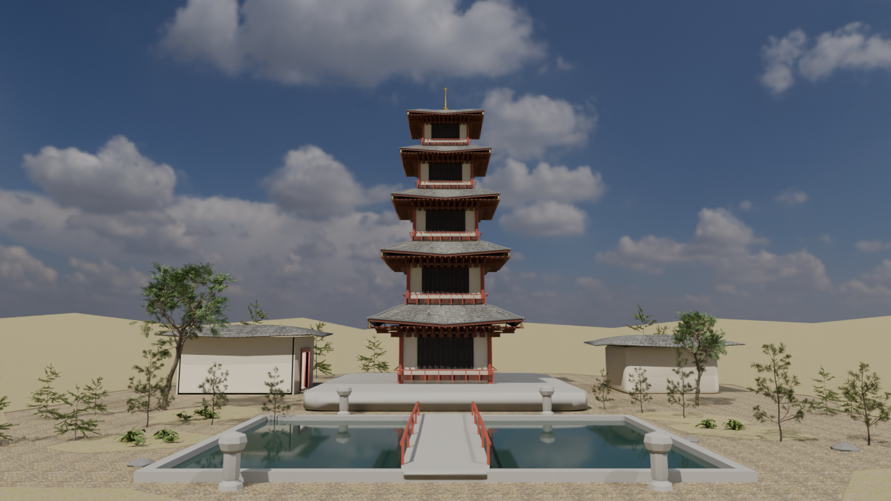
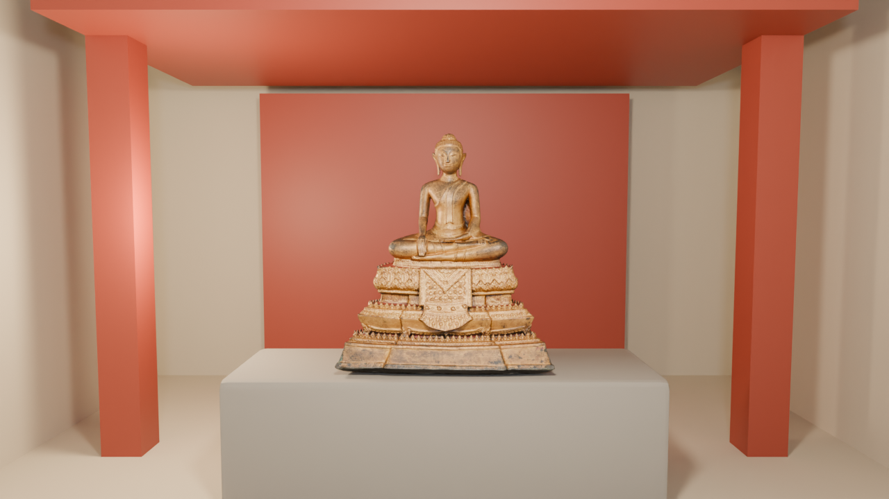
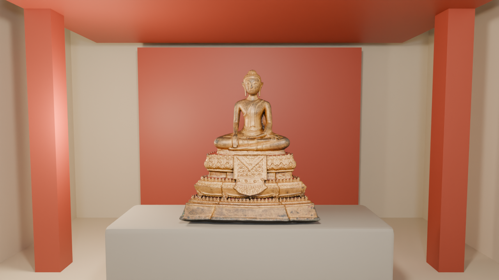
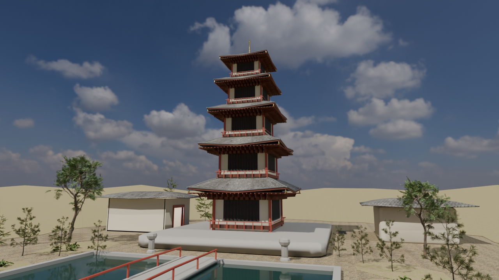

古塔庭院，五段镜头。
围绕庭院佛塔，从完整环境开始，依次靠近檐下、佛像与水院，再以庭院镜头收尾。佛像来自明尼阿波利斯艺术博物馆开放模型；场景建模、装配、材质、摄影机与动画由 DeepBlend 插件制作。
37.5 秒 · 900 帧 · 24 fps · 1280 × 720 · Cycles / 128 samples · H.264

01 · 全景建立庭院

02 · 佛像与庭院关系

03 · 佛像近景

04 · 庭院收尾
SceneSpec 提供场景结构、材质配置、摄影机与动画记录。外部素材文件和原生 Blender 工程未打包，需补齐素材后才能重建；本页提供的是作品展示与结构源码。